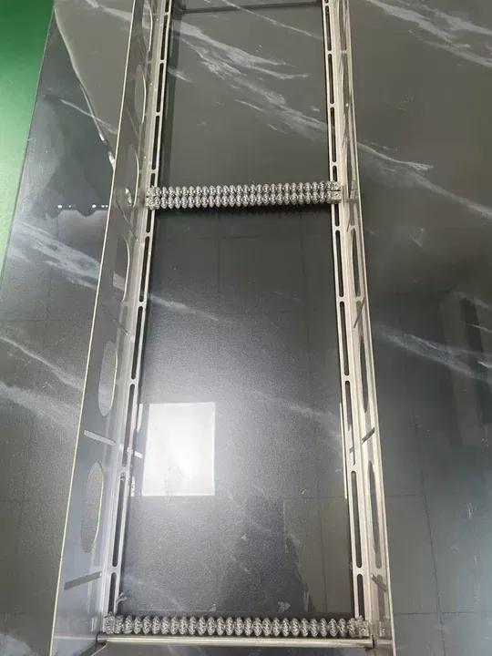
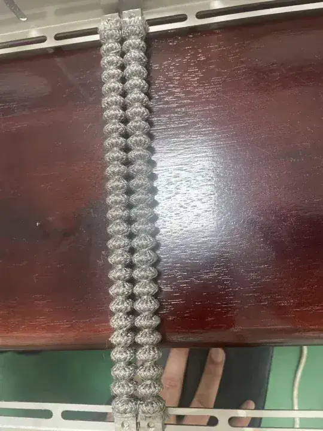
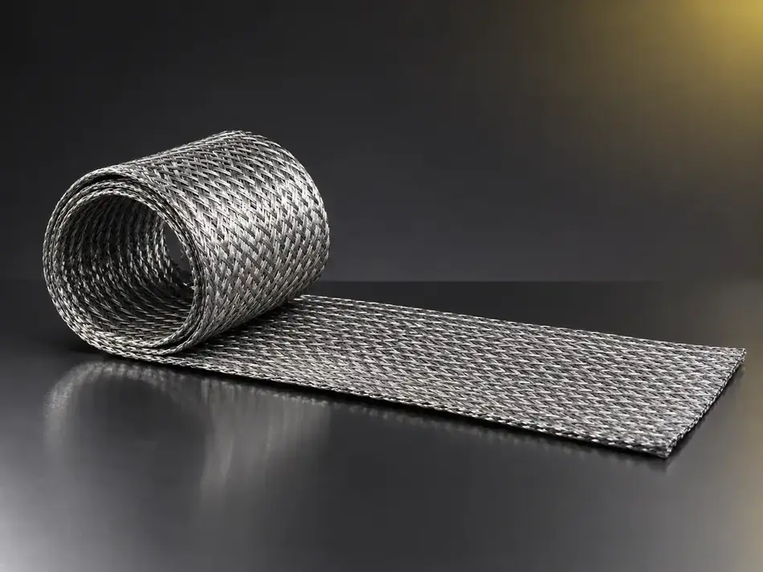
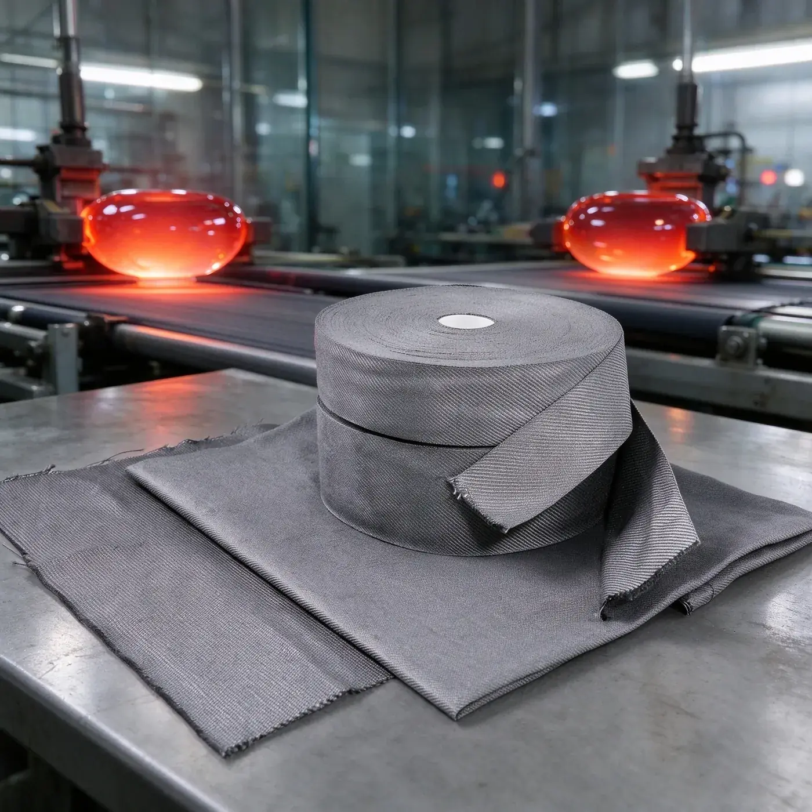

Rated to 1100 °C, lint-free and non-marking — fewer furnace stops and fewer rejected panels.
What this solution is for
- Roller sleeves have a short service life, and every change means furnace downtime and labour.
- Aged sleeves crack, powder or shed fibers, leaving scratches or imprints on the glass surface.
- Molten potassium nitrate in chemical strengthening furnaces attacks the toothed bars and rack protection.
- Different furnace types and roller diameters need different sizes, and suppliers struggle to adapt.
- Imported consumables are expensive, lead times are long, and stock pressure is high.
| Item | Detail |
|---|---|
| Target buyers | Physical tempering furnace OEMs and parts suppliers · architectural and automotive glass processors · electronic and chemically strengthened glass plants · container glass works |
| Typical conditions | Ceramic rollers in physical tempering furnaces (350–1100 °C), molten potassium nitrate in chemical strengthening, hot bending moulds, suction cups and clamps, container pusher bars |
| Lead products | TGZ112 elastic knitted sleeve · TGBX112 / TGBX113 braided sleeve · metal fiber woven cloth and tape · high-temperature rope · damping felt |
| How it is verified | Send samples for a live furnace trial, then compare service life and glass surface quality |
Priority order
Who we serve first, and why
| Priority | Buyer type | Why |
|---|---|---|
| A | Physical tempering furnace OEMs and parts suppliers; architectural and automotive glass processors | Sleeves are a continuously consumed item, and an OEM can carry volume into every machine it ships |
| B | Electronic glass and chemically strengthened glass plants | Higher technical threshold and unit value; braided sleeves hold a clear advantage against molten salt |
| C | Container glass works and decorative glass shops | Pusher-bar covers and mould needs are scattered, so they sit alongside the main accounts |
Product fit
Candidate products and selection logic
Candidates are a starting point. Final suitability depends on your exact conditions, so we confirm it with samples and testing rather than on paper.
| Application | Candidate products | Selection logic |
|---|---|---|
| Ceramic roller protection in physical tempering | TGZ112 elastic knitted sleeve, Φ35 / 50 / 55 / 60 mm, rated 350–1100 °C | 316L stainless steel fiber knitted for elasticity; grips the roller closely, presents a smooth lint-free surface, and does not crack or powder at end of life |
| Toothed bars and rack protection in chemical strengthening | TGBX112 / TGBX113 braided sleeve, Φ5–14 mm; metal fiber tape wrapping | Resists nitrate, sulphuric acid, dilute hydrochloric acid, alkali and salt corrosion; stays intact over long service |
| Hot bending mould covers for automotive glass | Metal fiber woven cloth — plain 0.35 mm / twill 0.5 mm, widths 1000 / 1200 / 1500 mm; metal fiber tape | Breathable, ductile and heat resistant; reduces forming marks |
| Suction cup and clamp cushioning | High-temperature metal fiber damping felt, 2–3 mm thick | Three-dimensional porous structure damps vibration, rated 350–1100 °C, resists ageing |
| Container pusher bars and sealing | High-temperature metal fiber rope, Φ1–12 mm, square or round | Abrasion and shear resistant with a smooth surface |
How we work together
- No minimum order quantity — we can supply by the metre so a single furnace can be trialled first.
- Indicative FOB: TGZ112 approximately USD 19.5–45 / m depending on tube diameter; TGBX113 approximately USD 1.05–2.55 / m; TGBX112 quoted by tube diameter.
- Sizes are made to your furnace type, roller diameter and temperature requirement; matched kits can be supplied to furnace OEMs.
What buyers verify
- Service life and change interval at the same furnace temperature.
- Whether scratches, imprints and optical defects on the glass surface are reduced.
- How closely the sleeve fits, how easily it installs, and how consistent the sizing is.
Roller sleeves that crack, shed fibers or mark the glass cost you downtime and rejected panels. QL's TGZ112 elastic knitted sleeves are made from 316L stainless steel fiber, rated 350–1100 °C, fit snugly around ceramic rollers and keep a smooth, lint-free surface without cracking or dusting at end of life. For chemical tempering, our TGBX braided sleeves resist molten potassium nitrate, acids and alkalis. No minimum order — tell us your furnace type and roller diameter and we will send matching samples.
In service
Products and applications




Tell us your conditions
Send us your operating conditions, and we will send samples.
Temperature, medium, pressure, filtration rating, resistance or porosity — give us the numbers you work with and our engineers will recommend a configuration, quote it and arrange samples for your own testing.